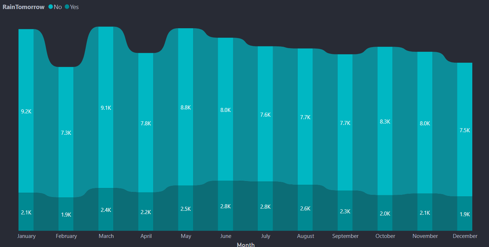
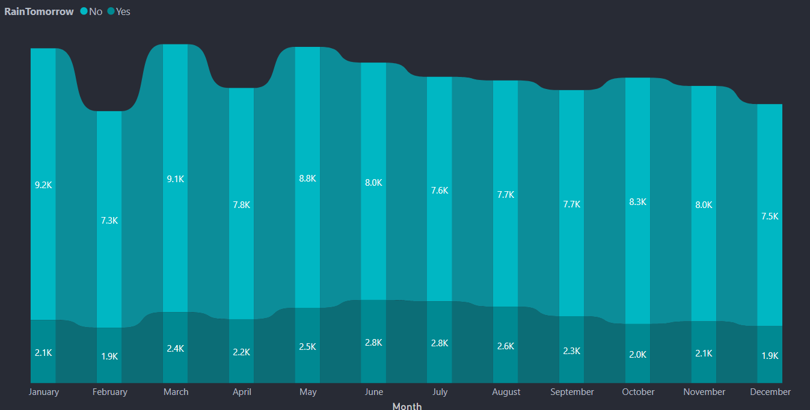

Plant Trees
Save Rain
"Plant trees to bring the rains and get rid of the summer's heat.” - Trees help reduce and moderate the temperature and climate, which is why it is so important that we have more of them
More info"Plant trees to bring the rains and get rid of the summer's heat.” - Trees help reduce and moderate the temperature and climate, which is why it is so important that we have more of them
More infoAquaPredict is an innovative web application powered by a robust Machine Learning model designed to forecast whether it will rain the next day. Utilizing the Rain Prediction in Australia dataset, this app aims to provide accurate and timely rainfall predictions, which are crucial for various stakeholders. Rainfall prediction is essential due to its significant impact on various aspects of life. High and unpredictable precipitation can lead to severe consequences, such as crop destruction and property damage. With AquaPredict, we aim to mitigate these risks by providing advanced warnings and enabling better management of agricultural activities. Over 80% of Australia receives less than 600 mm of rainfall annually, making it one of the driest continents, second only to Antarctica. For instance, inland areas near Lake Eyre receive as little as 81 mm of rain per year. The average annual rainfall in the Australian desert ranges from 81 to 250 mm, and thunderstorms are relatively common, with an annual average of 15 to 20 thunderstorms. In southern Australia, winters bring westerly winds and rain-bearing cold fronts due to high-pressure systems moving northward. Cold snaps may cause frost inland, while coastal areas remain mild. Summers are generally dry and hot with coastal sea breezes. Prolonged dry spells and hot winds from the interior can lead to bushfires, particularly in Victoria and New South Wales. On the other hand, northern Australia experiences a monsoon season known as "the wet" from October to April, characterized by humid north-westerly winds bringing showers and thunderstorms. Occasionally, tropical cyclones bring heavy rainfall to coastal and inland regions. AquaPredict's advanced forecasting capabilities provide early rainfall projections, allowing for preventive measures to minimize risks to life and property. The app also aids in better agricultural management by providing precise weather forecasts, enabling farmers to make informed decisions. By leveraging advanced datasets and machine learning, AquaPredict enhances the accuracy of rainfall predictions, ensuring better preparedness and management.
This dashboard is done using a software called PowerBI which is a product of Microsoft. Here We have just attached the images of the dashboard because PowerBI needs oraganizational account. So to see the visualizations interactive, We use similar images to replicate the original PowerBI dashboard. The usage of dashboards like these is to bring a better understanding about the dataset and also to bring some beautiful insights


 
